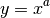

Bases: astropy.visualization.BaseStretch
A power stretch.
The stretch is given by:

Attributes Summary
| inverse |
Methods Summary
| __call__(values[, out, clip]) | Transform values using this stretch. |
Attributes Documentation
Methods Documentation
Transform values using this stretch.
| Parameters: | values : ndarray or list
out : ndarray, optional
clip : bool, optional
|
|---|---|
| Returns: | new_values : ndarray
|